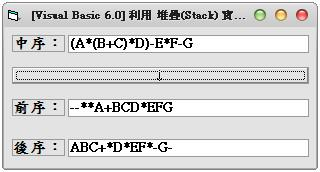
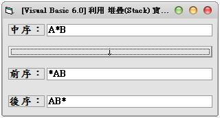
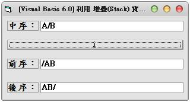
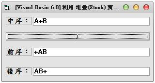
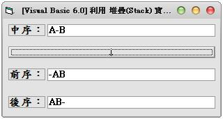
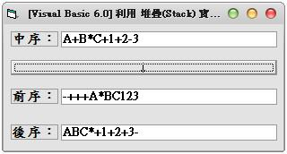

[Visual Basic 6.0] 利用 堆疊(Stack) 實作中序轉前序與後序 (作者：廖憲得 0xde)






Dim Stack() ' 建立一個堆疊
Dim StackTop ' 堆疊頂端指標
Private Sub StartInFo_Click()
'-----中序轉後序-----
ReDim Stack(Len(Text1)) ' 堆疊大小為整串大小 (避免出錯)
StackTop = 0 ' 堆疊初始化
Text3 = "" ' 一開始將輸出清空
For i = 1 To Len(Text1) ' 一個一個字抓直到結束
Select Case Mid(Text1, i, 1)
Case "(" ' 放入堆疊中
StackPush (Mid(Text1, i, 1))
Case ")"
' 拿出來直到等於 "("
Do Until Stack(StackTop) = "("
Text3 = Text3 & StackPop
Loop
StackPop
Case "+", "-" ' 如果堆疊頂端的權值大於等於讀入的值則先讀出 => "+","-","*","/"
Do Until Stack(StackTop) <> "+" And Stack(StackTop) <> "-" And Stack(StackTop) <> "/" And Stack(StackTop) <> "*"
Text3 = Text3 & StackPop
Loop
StackPush (Mid(Text1, i, 1))
Case "*", "/" ' 如果堆疊頂端的權值大於等於讀入的值則先讀出 => "*","/"
Do Until Stack(StackTop) <> "*" And Stack(StackTop) <> "/"
Text3 = Text3 & StackPop
Loop
StackPush (Mid(Text1, i, 1))
Case Else ' 除了括號或運算元直接放入
Text3 = Text3 & Mid(Text1, i, 1)
End Select
Next i
Do Until StackTop = 0 ' 將堆疊中的全部拿出來
Text3 = Text3 & StackPop
Loop
'-----中序轉前序-----
ReDim Stack(Len(Text1)) ' 堆疊大小為整串大小 (避免出錯)
StackTop = 0 ' 堆疊初始化
Text2 = "" ' 一開始將輸出清空
For i = Len(Text1) To 1 Step -1 ' 從最後面開始做做到最前面,輸出也是從後面放到前面
Select Case Mid(Text1, i, 1)
Case ")" ' 放入堆疊中
StackPush (Mid(Text1, i, 1))
Case "(" ' 拿出來直到等於 ")"
Do Until Stack(StackTop) = ")"
Text2 = StackPop & Text2
Loop
StackPop
Case "+", "-" ' 拿到直接讀入的值 <= 堆疊頂端的值
Do Until Stack(StackTop) <> "*" And Stack(StackTop) <> "/"
Text2 = StackPop & Text2
Loop
StackPush (Mid(Text1, i, 1))
Case "*", "/"
StackPush (Mid(Text1, i, 1)) ' 直接放入
Case Else ' 除了括號或運算元直接放入
Text2 = Mid(Text1, i, 1) & Text2
End Select
Next i
Do Until StackTop = 0 ' 將堆疊中的全部拿出來
Text2 = StackPop & Text2
Loop
End Sub
Function StackPush(Inp) ' 放入堆疊
StackTop = StackTop + 1
Stack(StackTop) = Inp
End Function
Function StackPop() ' 從堆疊中讀出
StackPop = Stack(StackTop)
Stack(StackTop) = ""
StackTop = StackTop - 1
End Function【本文作者為「廖憲得」，原文網址為： http://www.dotblogs.com.tw/0xde/archive/2013/11/18/130093.aspx ，由陳鍾誠編輯後納入本雜誌】